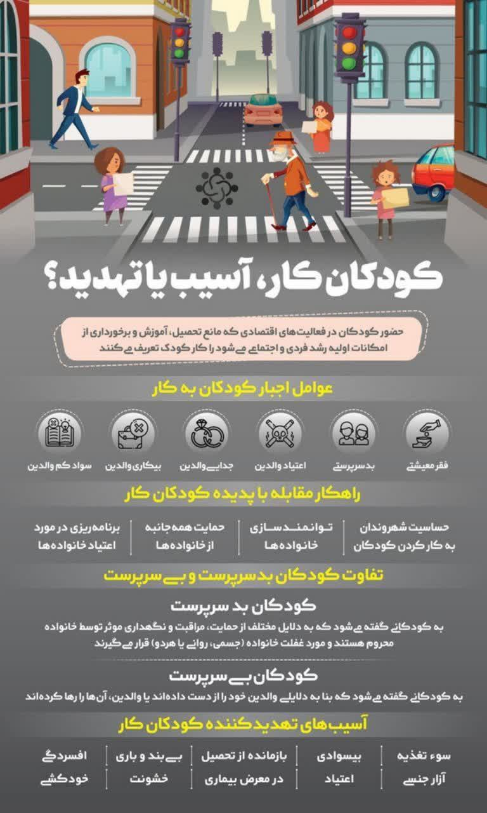

اینفوگرافیک حاضر، نگاهی جامع به پدیده کودکان کار دارد؛ از عوامل اصلی مجبور شدن کودکان به کار، مانند فقر، بیکاری و بدسرپرستی، تا راهکارهایی برای مقابله با این معضل، همچون حمایت خانوادهها و توانمندسازی آنها.

مرکز حمایتی و آموزشی کودک و خانواده آتنک در کرمانشاه با ارائه خدمات متنوع به کودکان کار شهر، در تلاش است تا این زخم عمیق بر پیکره جامعه را ترمیم کند.
مرکز آتنک با اعتقاد به اینکه هر کودک حق دارد در محیطی امن و حمایتگر رشد کند، بهطور مستمر در تلاش است تا شرایط بهتری را برای کودکان کار فراهم سازد و به آنها کمک کند تا در مسیر زندگیشان به سوی موفقیت گام بردارند.